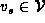
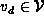
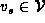
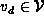
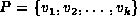
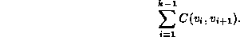

Data Structures and Algorithms
with Object-Oriented Design Patterns in C++
Data Structures and Algorithms
with Object-Oriented Design Patterns in C++In this section we consider edge-weighted graphs, both directed and undirected, in which the weight measures the cost of traversing that edge. The units of cost depend on the application.
For example, we can use a directed graph to represent a network of airports. In such a graph the vertices represent the airports and the edges correspond to the available flights between airports. In this scenario there are several possible cost metrics: If we are interested in computing travel time, then we use an edge-weighted graph in which the weights represent the flying time between airports. If we are concerned with the financial cost of a trip, then the weights on the edges represent the monetary cost of a ticket. Finally, if we are interested the actual distance traveled, then the weights represent the physical distances between airports.
If we are interested in traveling from point A to B, we can use a suitably labeled graph to answer the following questions: What is the fastest way to get from A to B? Which route from A to B has the least expensive airfare? What is the shortest possible distance traveled to get from A to B?
Each of these questions is an instance of the same problem:
Given an edge-weighted graph,  ,
and two vertices,  and ,
find the path that starts at
,
and two vertices,  and ,
find the path that starts at  and ends at
and ends at  that has the smallest weighted path length.
The weighted length of a path is defined as follows:
that has the smallest weighted path length.
The weighted length of a path is defined as follows:
Definition (Weighted Path Length) Consider an edge-weighted graph. Let
be the weight on the edge connecting
to
. A path in G is a non-empty sequence of vertices . The weighted path length of path P is given by

The weighted length of a path is the sum of the weights on the edges in that path. Conversely, the unweighted length of a path is simply the number of edges in that path. Therefore, the unweighted length of a path is equivalent to the weighted path length obtained when all edge weights are one.
 Copyright © 1997 by Bruno R. Preiss, P.Eng. All rights reserved.
Copyright © 1997 by Bruno R. Preiss, P.Eng. All rights reserved.